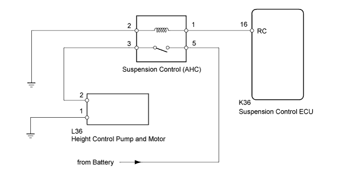
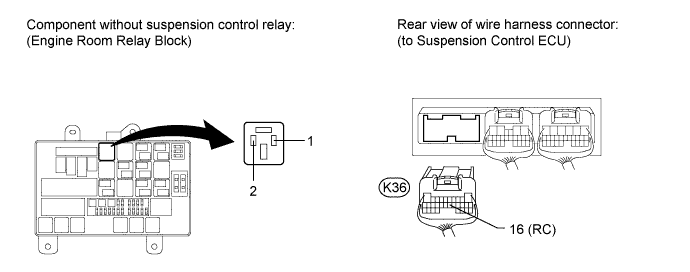
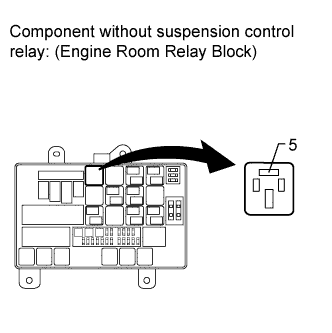
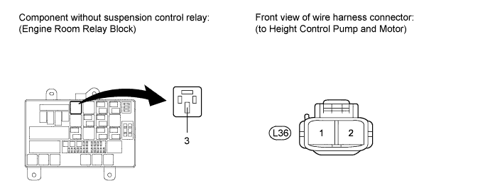

DTC C1763 Abnormal Pump Motor Oil Pressure |
| DTC Code | Detection Condition | Trouble Area |
| C1763 | While the motor relay is in operation, the condition that the fluid pressure is 0.6 MPa (6.1 kgf/cm2, 87 psi) or less continues for 0.6 seconds. |
|

| 1.INSPECT SUSPENSION CONTROL RELAY (AHC) |
Remove the suspension control relay from the engine room relay block.
 |
Measure the resistance according to the value(s) in the table below.
| Tester Connection | Condition | Specified Condition |
| 3 - 5 | Battery voltage is not applied to terminal 1 and 2 | 10 kΩ or higher |
| Battery voltage is applied to terminal 1 and 2 | Below 1 Ω |
|
| ||||
| OK | |
| 2.CHECK HARNESS AND CONNECTOR (SUSPENSION CONTROL ECU - RELAY (AHC) AND BODY GROUND) |

Remove the suspension control relay from the engine room relay block.
Disconnect the K36 ECU connector.
Measure the resistance according to the value(s) in the table below.
| Tester Connection | Condition | Specified Condition |
| K36-16 (RC) - Relay block suspension control relay terminal 1 | Always | Below 1 Ω |
| K36-16 (RC) - Body ground | Always | 10 kΩ or higher |
| Relay block suspension control relay terminal 2 - Body ground | Always | Below 1 Ω |
|
| ||||
| OK | |
| 3.CHECK HARNESS AND CONNECTOR (BATTERY - SUSPENSION CONTROL RELAY) |
Remove the suspension control relay from the engine room relay block.
 |
Measure the voltage according to the value(s) in the table below.
| Tester Connection | Condition | Specified Condition |
| Relay block suspension control relay terminal 5 - Body ground | Always | 11 to 14 V |
|
| ||||
| OK | |
| 4.CHECK HARNESS AND CONNECTOR (SUSPENSION CONTROL RELAY - PUMP AND MOTOR AND BODY GROUND) |
Remove the suspension control relay from the engine room relay block.
Disconnect the L36 pump and motor connector.
Measure the resistance according to the value(s) in the table below.

| Tester Connection | Condition | Specified Condition |
| Relay block suspension control relay terminal 3 - L36-2 | Always | Below 1 Ω |
| Relay block suspension control relay terminal 3 - Body ground | Always | 10 kΩ or higher |
| L36-1 - Body ground | Always | Below 1 Ω |
|
| ||||
| OK | |
| 5.CHECK OPERATION OF HEIGHT CONTROL PUMP AND MOTOR |
 |
Remove the height control pump and motor (Click here).
Apply battery voltage to the height control pump and motor and check the operation of the motor.
| Measurement Condition | Specified Condition |
| Battery positive (+) → Terminal 2 Battery negative (-) → Terminal 1 | Motor operates |
|
| ||||
| OK | ||
| ||